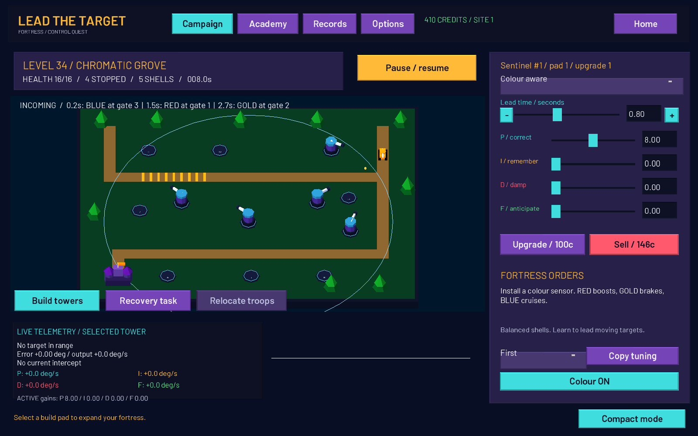
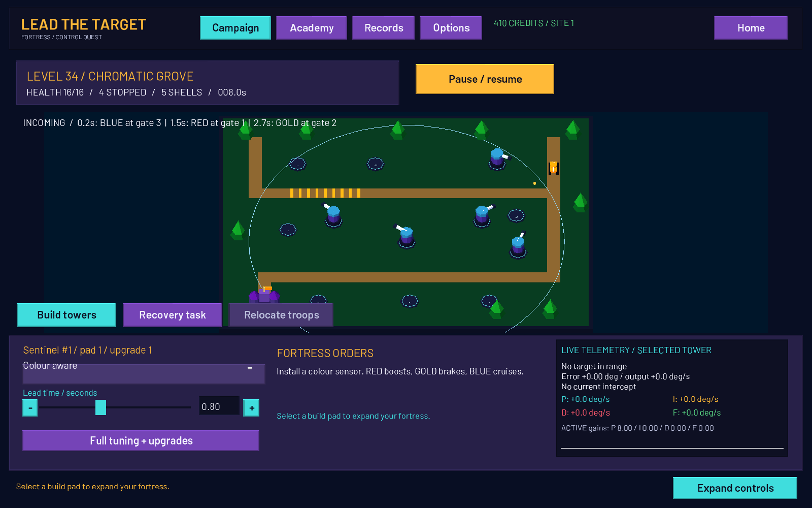
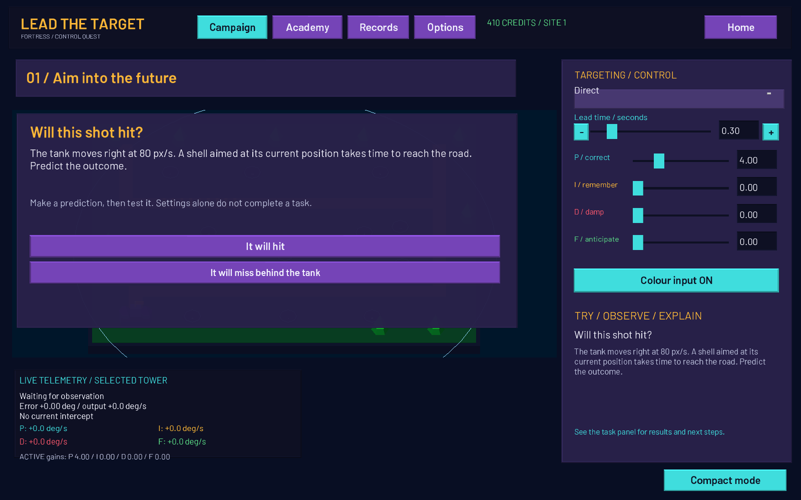
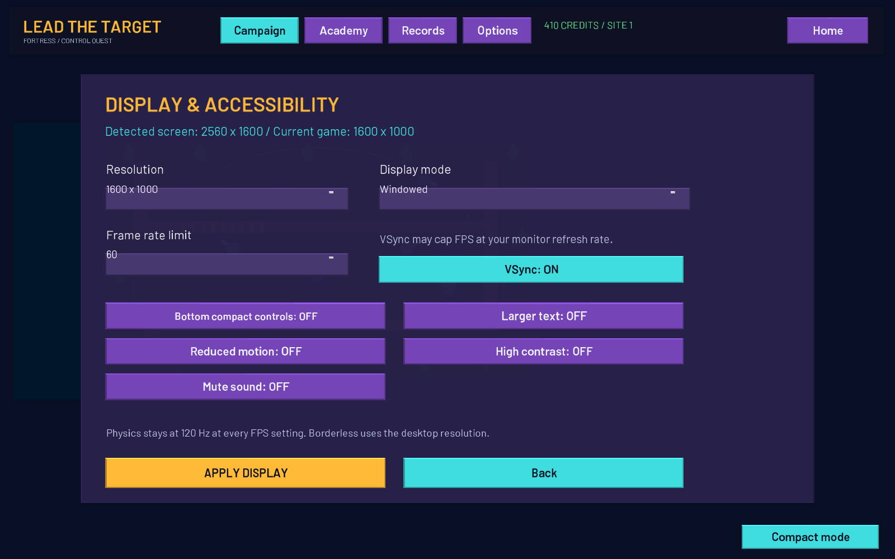

A campaign beyond the classroom
100 timed encounters in ten regions. Scout patrols, double pulses, flanks and region sieges demand different defences.
INDEPENDENT / OPEN SOURCE / PANDA3D
A moving target won’t wait for your shell.
Build your fortress. Predict its next move.
Make every shot count.
Windows downloads · Python source for tinkerers

THE ART OF THE INTERCEPT
Aim where a tank is, and your shell arrives too late. Aim where it will be, and everything changes.
Lead the Target puts predictive targeting at the heart of tower defence. Place towers on numbered build pads, tune their aim and spend your earnings on stronger equipment. Defend against timed rushes, armoured convoys and attacks from different entrances across ten campaign regions.
When the fortress falls, relocate your troops, salvage equipment and rebuild. A short quartermaster contract can earn the credits for your next defence.
The academy is there when you want an edge. Test an idea, see the result and prove what works. Physics becomes a tool you use to win.
IN THE CURRENT BUILD
100 timed encounters in ten regions. Scout patrols, double pulses, flanks and region sieges demand different defences.
Sentinels, heavy cannons, tracking turrets and sensor stations. Buy, upgrade and configure individual towers; copy good tuning across your formation.
Fast and slow tanks, acceleration, braking and sudden speed changes. A colour sensor unlocks separate prediction branches for red, gold and blue.
A cyan lead point, measured error and live P, I, D and feedforward output reveal exactly what your selected turret is doing.
Eight academy lessons combine predictions, measured experiments and field challenges. Congratulations follow demonstrated success; button presses alone don’t earn mastery.
Monitor detection, resolution and FPS choices, display modes and a one-click compact control dock. Larger text, colour class letters and reduced-motion options are included.
FROM THE BATTLEFIELD
Unedited captures from the running Panda3D build.
Select an image to view it at full resolution.



READY WHEN YOU ARE
Checking the latest stable release…
All releasesA / THE WORKSHOP
The complete game and assets. Read the algorithms, change a formula and try your own ideas.
Requires Python 3.12 and a dependency install.
Source ZIPB / EXTRACT & PLAY
Download, extract the entire folder and launch the game. No Python or installer needed.
Windows x64 · keep the folder together.
Portable ZIPC / YOUR HOME BASE
A per-user installation with Start menu shortcuts, an optional desktop shortcut and an uninstaller.
Windows x64 · no Python or admin needed.
Installer EXEFree and open source. Only complete, published stable releases appear here. Release notes & checksums ↗
FROM DOWNLOAD TO DEFENCE
Mouse to select a pad or tower.
Space to pause. C for compact mode.
Options for resolution and FPS.
Extract the ZIP completely. Open the LeadTheTarget folder, then run LeadTheTarget.exe. Keep _internal and the other included files beside the EXE. Running from inside the ZIP is not supported.
Run the downloaded windows-setup.exe. Choose your install folder and shortcuts. Launch from the Start menu. Uninstall through Windows Installed apps or the included uninstaller. Your saved progress is kept in your user profile.
Extract the source ZIP. Install Python 3.12, open a terminal in the extracted game folder, then run:
python -m venv .venv
.venv\Scripts\python -m pip install -r requirements.txt
.venv\Scripts\python main.pyOn other platforms, the virtual environment executable is .venv/bin/python. Windows is the release-tested platform; other source platforms have not been verified.
The packaged builds target 64-bit Windows 10 (version 1809 or newer) and Windows 11. Use a graphics driver supporting Panda3D’s OpenGL renderer. The game supports a minimum 800 × 600 window; 1280 × 800 or higher is recommended for readable controls. No minimum GPU or RAM specification has been benchmarked.
If the game will not start, fully extract it, check that the assets and _internal folder are present, and update your graphics driver. If a display choice is unusable, wait 15 seconds for it to revert. VSync can cap FPS at your display’s refresh rate.
This is an unsigned independent release. Check the repository and release checksums if Windows reports an unknown publisher. Do not disable your security software. Report a problem ↗